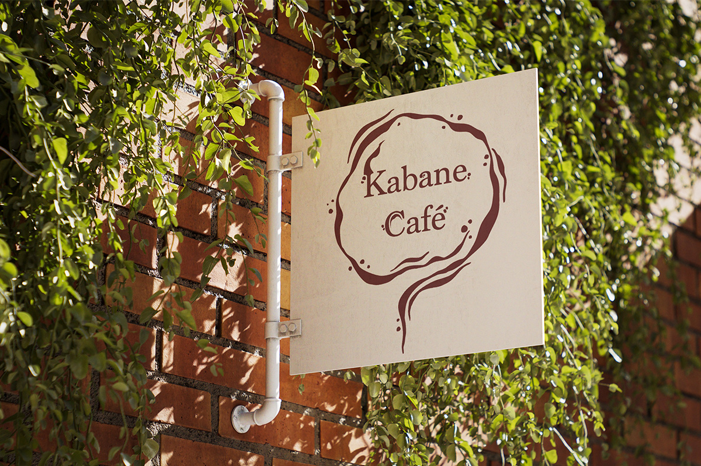
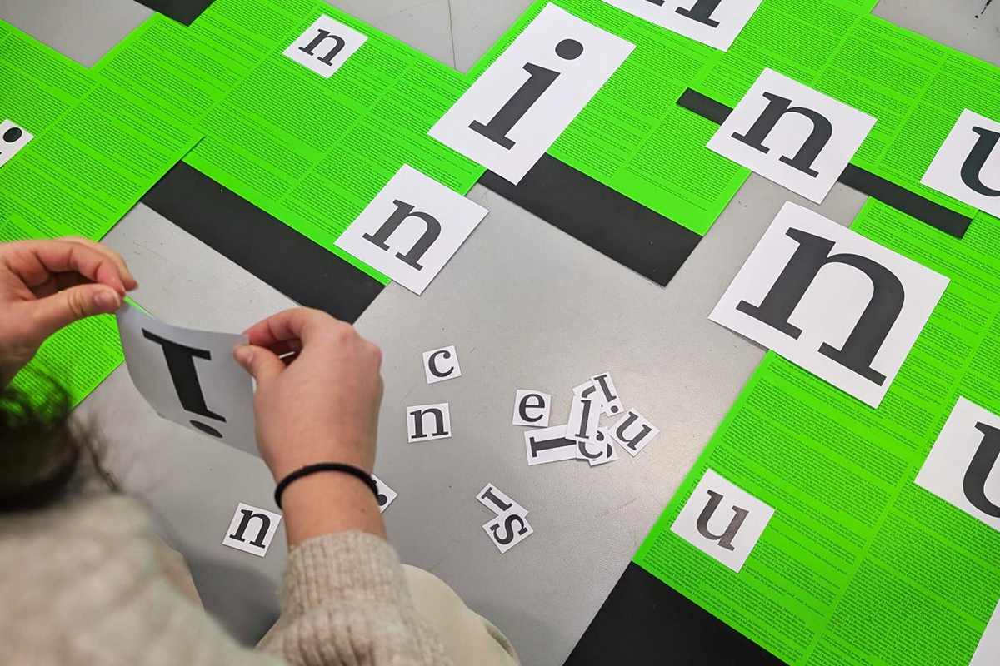

Welcome to my selfmade portfolio website ! I am a french-japanese graphic design student ! Welcome to my selfmade portfolio website ! I am a french-japanese graphic design student ! Welcome to my selfmade portfolio website ! I am a french-japanese graphic design student !

Fanzine Futur
Editorial design of a risographic futuristic fanzine.

Kabane Café
Visual identity of a parisian coffee shop.

Babyboo
Visual Identity / Packaging for a collection of three new and original sauces Tabasco.

Gangsters
Editorial design for a collection of three books about gangsters.

Minuscule
Visual communication / Display for a conference day.

B&W photography
Photographs in black and white.
VISUAL IDENTITY / GRAPHIC DESIGN / COMMUNICATION / ILLUSTRATION / TYPOGRAPHY / BRANDING / WEB DESIGN / DIGITAL MEDIA / CREATIVE DIRECTION / PHOTOGRAPHY / EDITORIAL DESIGN /